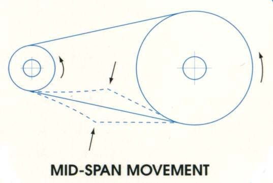

Slack is how far the chain can move up and down halfway between the sprockets. Too loose, it slaps, wears the slider and can jump off. Too tight, it pulls hard on the gearbox output bearing and the rear wheel bearing, and the K-Light manual warns it overloads the engine and other parts. A tight chain also makes the wheel drag. Check slack every week or two and after any wheel removal.
Safety
- Engine off, key out. Turn the wheel by hand only.
- The rear axle nut holds the wheel in place. If you loosen it, you must tighten it to the correct torque before riding.
- On a drum rear brake, moving the wheel changes the brake adjustment. Always recheck the brake after adjusting the chain.
You need
- Spanners or sockets for the axle nut and adjuster nuts, a steel rule, a torque wrench.
- A new split pin if the axle nut has one.
- The rear axle torque for your bike. The K-Light manual gives two different rear axle torques on different pages, so confirm the correct value with a dealer before you loosen the nut.
Steps
- Stand the bike upright on level ground, off the side stand. K-Light 125: measure with the bike upright. Some bikes are measured with a rider seated or on the side stand; follow your manual.
- In neutral, push the bike slowly forward and find the point where the chain is tightest. Chains wear unevenly; always set slack at the tightest point.
- At the middle of the lower run, push the chain up and down and measure the total movement. K-Light 125: 20 to 40 mm. Other bikes: use your manual's value.
- If slack is in range, stop here. If not, loosen the axle nut (and any adjuster locknuts).
- Turn the adjusters on both sides by the same amount. Count flats or turns. Tighten to reduce slack; loosen and push the wheel forward to increase it.
- Check the alignment marks on both swingarm sides show the same position, so the wheel is straight.
- Push the wheel forward against the adjusters and tighten the axle nut to the correct torque. Fit a new split pin if used.
- Tighten the adjuster locknuts firmly to the value in your bike's manual.
- Measure slack again at the tightest point. Tightening the axle often changes it slightly.
- Spin the wheel. It should turn freely. Check the rear brake works and does not drag; on a drum brake reset the pedal free play (Adjust a drum brake).
Check your work
- Slack in range at the tightest point.
- Marks equal on both sides; the chain runs in the middle of the sprocket teeth.
- Axle nut at the correct torque, split pin fitted, brake working.
If it did not fix the problem
- Adjusters are at the end of their range, or slack changes a lot around the chain: Check the chain for wear.
- Needs adjusting every few days: Chain needs adjusting very often.
- Chain still rubs: Check chain guides, sliders and guards.
Reference values (K-Light 125)
| Item | Value | Source |
|---|---|---|
| Chain slack, lower run, bike upright | 20 to 40 mm | K-Light 125 manual, PDF p. 61 |
| Rear axle nut | Conflicting values in the manual; not given here | K-Light 125 manual, PDF pp. 49, 106, 158, 166 |